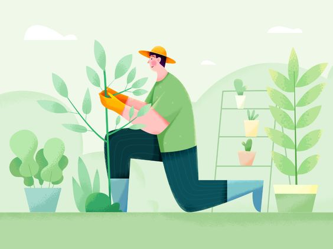

My name Is Butcher, I am 34 years old I've grown up in the suburbs of Johannesburg and have developed a strict vegan lifestyle within the past three years. I used to work as a nurse in the Netcare hospital and have assised in the deliverance of several beautiful babies. I loved my job but my true passion is with gardening. And so began my venture into gardening. I reside in Befordview where you can see an assortment of well cared for and beautiful plants grown by yours truly.
This website will hopefully develope into its own little 'online nursery' whereby I can reach a larger audience of customers that will eventually make way to my humble shop. Not only is this website dedicated to my flowers and plants, I will also share my thoughts on the digital world in a series of blogposts I intend to update weekly. A warm welcome to my little page and most importantly ENJOY!